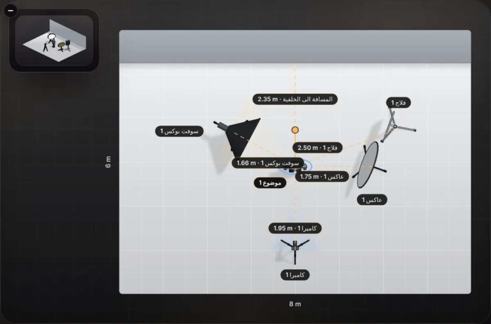

مخطط إضاءة بورتريه
قاعدة بسيطة لبورتريه الاستوديو مع ضوء رئيسي بزاوية 45 درجة وتحكم في الـ fill ومخطط قابل للطباعة.
مخطط استوديو التصوير
ضع الشخص والكاميرا والإضاءة والملحقات على مخطط بمقياس رسم. يحسب LITE Studio المسافات، ويعرض المشهد بثلاثة أبعاد، ويصدّر مخططًا واضحًا ترسله إلى فريقك.

كيف يعمل
اختر من بين 46 مشهدًا جاهزًا (بورتريه، تجميل، منتجات، بودوار، مقابلة…) أو ابدأ في استوديو فارغ بمساحة 8 × 6 م.
أضف المعدات من المكتبة، وحرّكها بالفأرة أو بإصبعك، وأدرها بالمقبض البرتقالي. لكل عنصر مقاساته الحقيقية.
يعرض وضع المسافات المسافات المهمة. بعد ذلك صدّر المخطط بصيغة PNG أو PDF، أو انسخ الصورة لإرسالها مباشرة.
ما يقدمه LITE Studio
المخطط والعرض ثلاثي الأبعاد
سوفت بوكس، مظلات، حوامل C-stand، عاكسات، أثاث: كل عناصر المكتبة الثمانين مصممة بأبعادها الحقيقية. انتقل من العرض العلوي إلى العرض ثلاثي الأبعاد لتقدير الأحجام والمساحة حول الشخص.

القياسات
فعّل وضع المسافات: يعرض LITE Studio المسافة بين الشخص والخلفية والكاميرا وكل مصدر ضوء، مع تقدير لفتحة العدسة عند ISO 100 للإضاءة الرئيسية. ويمكنك أيضًا رسم قياساتك الخاصة من نقطة إلى أخرى.

مختبر التصوير
غيّر قيمة ISO وفتحة العدسة والبعد البؤري، وشاهد النتيجة فورًا على صورة: التشويش والتعريض وعمق الميدان والتأطير. يضع وضع المقارنة الصورة المرجعية بجانب إعدادك.

في موقع التصوير
على الجهاز اللوحي والهاتف تصبح الواجهة أكثر إحكامًا: تُفتح المكتبة كلوحة منزلقة، ويُكبَّر المخطط بإصبعين، وتبقى كل الأزرار سهلة اللمس. وتبقى إعداداتك الخاصة محفوظة في المتصفح.

تطبيق أندرويد
سجّل معداتك واعرف فورًا الإعدادات الجاهزة التي يمكنك تنفيذها بها وكيف تعوّض ما ينقصك. في موقع التصوير يرشدك التطبيق عنصرًا بعنصر، مع مقياس للضوء وعلامات على الأرض بالواقع المعزز. تنتقل المخططات بحرية بين الموقع والتطبيق.
مجانًا. سيصلك رابط التسجيل في الاختبار فور افتتاحه.
الإعدادات الجاهزة
كل إعداد جاهز نقطة انطلاق واقعية: حمّله، وكيّفه مع الاستوديو الخاص بك، ثم احفظ نسختك الخاصة.
مجاني، من دون حساب، ولا شيء لتثبيته. افتح التطبيق وحمّل إعدادًا جاهزًا للتجربة.
صفحات SEO
هذه الصفحات تجيب عن احتياجات عملية وتحوّل الزائر مباشرة إلى التطبيق مع الإعداد الجاهز المناسب.
قاعدة بسيطة لبورتريه الاستوديو مع ضوء رئيسي بزاوية 45 درجة وتحكم في الـ fill ومخطط قابل للطباعة.
أثاث وأجواء وخلفية وحركة وإضاءة لتحضير جلسة بودوار داخل الاستوديو.
إعداد فيديو واضح داخل الاستوديو للمقابلات والبودكاست المصور والمشاريع corporate.